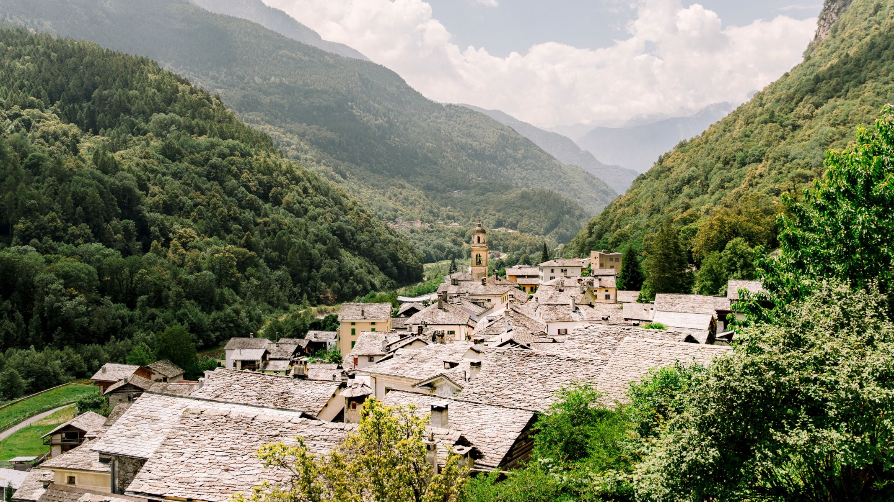

엥가딘 남쪽에 자리한 구아르다는 바커 상 (Wakker Prize) 을 수상할 만큼 아름다운 마을이다.
작가 알로아 카리지엣(Alois Carigiet)이 쉘렌우르슬리(Schellenursli; 아이들의 동화 제목)의 집을 구상할 때, 이곳 구아르다의 집에서 영감을 얻었다고 한다.
쉘렌우르슬리의 마을, 구아르다(Guarda)는 남쪽을 향하여 있는 양지 바른 경사지에 자리한 엥가딘 남쪽 1,653미터에 위치하고 있다. 여름철과 겨울철 모두, 잘 닦여 있는 하이킹 길은 마을에서부터 전원 지대까지 이어져 있다. 엥가딘 마을의 가옥들은 17세기 중반부터 아름답게 채색된 외관을 갖고 있다. 특별한 산책길은 쉘렌우르슬리에 중점을 두고 있다 – 알로아 카리지엣의 동화 속에 등장하는 주요 캐릭터로 1945년 초판이 발행 되었다(영문 발행판도 있음). 이 산책길은 단계별로 하이킹을 할 수 있어, 특히 가족들에게 적합하다. 구아르다는 오래된 전통인 카란트아마츠(Chalandamarz)를 볼 수 있는 곳 임을 더 말할 필요가 없다. 이 전통에는 커다란 소 종들을 시끄럽게 울리며 겨울을 쫓아 내는 의식이 포함된다. 어린이들의 스키 리프트, 빙상장, 토보건 활강장과 크로스-컨트리 트랙은 가족들을 위해 겨울철 풍성하게 제공된다.